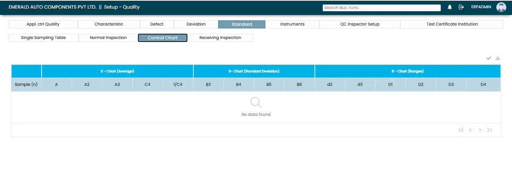

<div data-category="Quality control Management" data-title="Control Chart" data-updated="December 01, 2025" data-contributors="RoadmapIT" data-breadcrumb="Home,Quality control Management,Control Chart">
  <div class="page-content">
    <p>The Control Chart can be defined in this screen. The Control Chart can be added, edited, and deleted as follows.</p>

    <h5>Navigation Path:</h5>
    <p class="fs-6">Quality Control \ Setup \ Setup – Quality</p>
    
    <!-- Control Chart -->
    <h2>Control Chart:</h2>
    <ul style="list-style-type: none; align-content: center">
      <li class="mouse-icon">Enter the Sample Chart.</li>
      <li class="mouse-icon">Enter the Average X-Charts, S-Charts, and R-Charts.</li>
    </ul>
  </div>
</div>